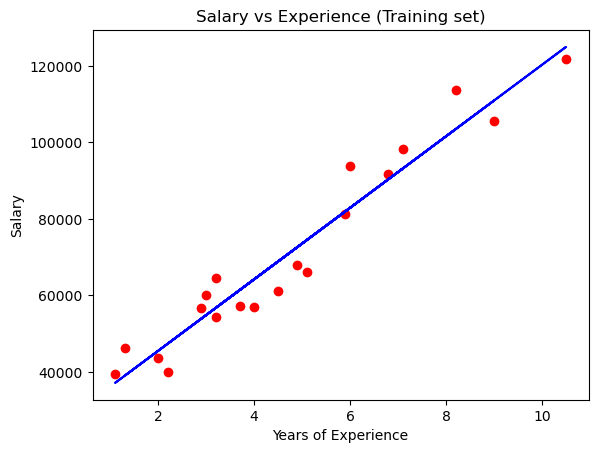
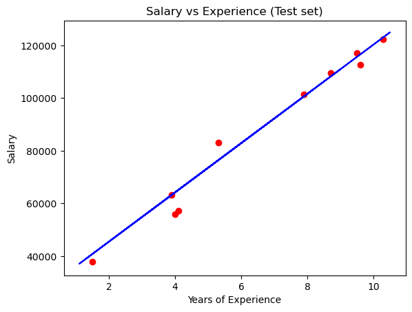

import numpy as np
import pandas as pdWhat is Linear Regression Model
Linear Regression model is Supervised Machine Learning model. It predicts a dependent variable, y, based on an independent variable, X. The relation between X and y becomes a straight line to predict future data point. Because of these trait, it is best to predict continuous data set.
Types of Linear Regression Model
There are many types of linear regression model.
1. Simple Linear Regression
Simple Linear Regression is a basic machine learning model with only two variables using a straight line. In the equation below, y is a dependent variable, alpha is y-interccept, beta is slope, and X is a independent variable.
\[ y=\alpha +\beta X \]
Let’s check with actual example.
Importing the libraries
Importing the dataset
Our dataset is Salary Data which contains the average salary information based on years of experience. In this dataset, our independent variable, X, is a years of experience and our independent variable, y, is a salary.
Let’s think about a simple question. Can we predict someone’s salary based on his years of experience? Assume that you try to find an employee to work on your company and finally see a suitable candidate who already has work experience of 3.5 years. How much salary you need to pay for him?
Let’s use our simple linear regression model to find the suitable salary for him.
dataset = pd.read_csv('./dataset/Salary_Data.csv')
dataset| YearsExperience | Salary | |
|---|---|---|
| 0 | 1.1 | 39343.0 |
| 1 | 1.3 | 46205.0 |
| 2 | 1.5 | 37731.0 |
| 3 | 2.0 | 43525.0 |
| 4 | 2.2 | 39891.0 |
| 5 | 2.9 | 56642.0 |
| 6 | 3.0 | 60150.0 |
| 7 | 3.2 | 54445.0 |
| 8 | 3.2 | 64445.0 |
| 9 | 3.7 | 57189.0 |
| 10 | 3.9 | 63218.0 |
| 11 | 4.0 | 55794.0 |
| 12 | 4.0 | 56957.0 |
| 13 | 4.1 | 57081.0 |
| 14 | 4.5 | 61111.0 |
| 15 | 4.9 | 67938.0 |
| 16 | 5.1 | 66029.0 |
| 17 | 5.3 | 83088.0 |
| 18 | 5.9 | 81363.0 |
| 19 | 6.0 | 93940.0 |
| 20 | 6.8 | 91738.0 |
| 21 | 7.1 | 98273.0 |
| 22 | 7.9 | 101302.0 |
| 23 | 8.2 | 113812.0 |
| 24 | 8.7 | 109431.0 |
| 25 | 9.0 | 105582.0 |
| 26 | 9.5 | 116969.0 |
| 27 | 9.6 | 112635.0 |
| 28 | 10.3 | 122391.0 |
| 29 | 10.5 | 121872.0 |
X = dataset.iloc[:, :-1].values
y = dataset.iloc[:, -1].valuesNow, we split our dataset into test set and train set. We use sklearn train_test_split to manually split dataset. The size of test set gonna be one third of dataset.
from sklearn.model_selection import train_test_split
X_train, X_test, y_train, y_test = train_test_split(X, y, test_size=1/3, random_state=0)Training the Simple Linear Regression model
from sklearn.linear_model import LinearRegression
regressor = LinearRegression()
regressor.fit(X_train, y_train)LinearRegression()In a Jupyter environment, please rerun this cell to show the HTML representation or trust the notebook.
On GitHub, the HTML representation is unable to render, please try loading this page with nbviewer.org.
LinearRegression()
Now, we have our simple linear regression model that is fitted with our training set. We can predict y value by using this regressor model to predict with our test set.
y_pred = regressor.predict(X_test)Visualising the results
import matplotlib.pyplot as plt
plt.scatter(X_train, y_train, color='red')
plt.plot(X_train, regressor.predict(X_train), color='blue')
plt.title('Salary vs Experience (Training set)')
plt.xlabel('Years of Experience')
plt.ylabel('Salary')
plt.show()
This is our training set result by simple linear regression model. As we seen above, the red scattered points are actual dataset of our training set, and blue straight line is our simple linear equation driven from our model.
With this equation and graph, we can predict our test set also.
plt.scatter(X_test, y_test, color = 'red')
plt.plot(X_train, regressor.predict(X_train), color = 'blue')
plt.title('Salary vs Experience (Test set)')
plt.xlabel('Years of Experience')
plt.ylabel('Salary')
plt.show()
Let’s go back to our question. Can we now determine how much salary for the 3.5 years of experience employee?
y_salary = regressor.predict([[3.5]])
print(y_salary)[59526.99079496]Our regressor model determines to pay him almost 59500 dollar which seems reasonable to both you and him.